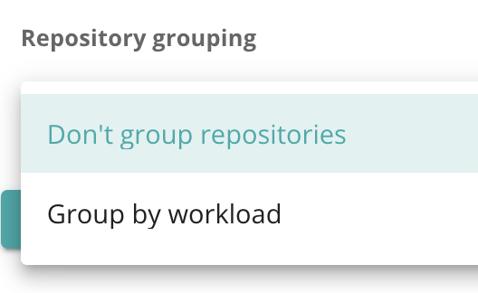
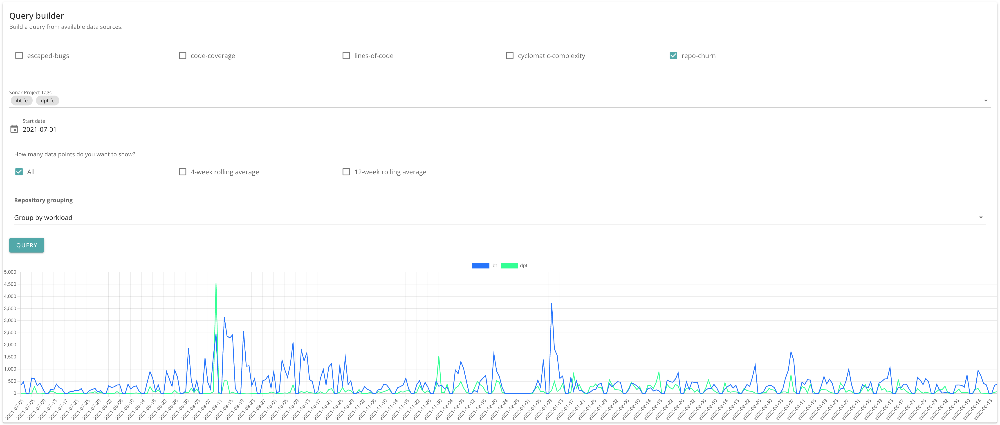
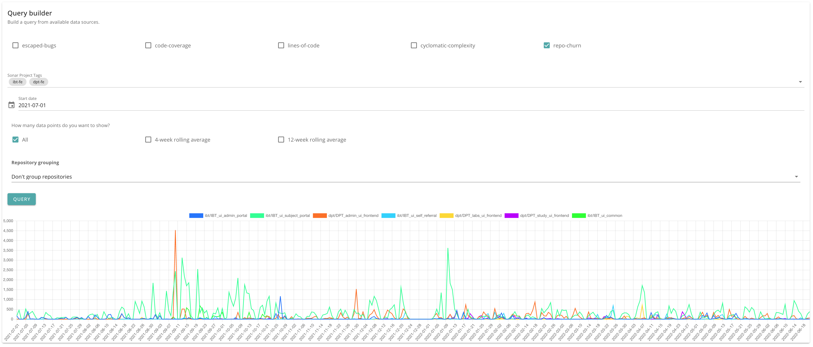

Repository churn
A metric showing the amount of change in a repository.
Available dimensions:
- Sonar tags
Calculating churn
Churn can be calculated as follows:
| Strategy | Meaning |
|---|---|
| ADD_EDIT_SUBTRACT_DELETE | Added lines and edited lines count positively toward the total. Deleted lines subtract from the total. |
| ADD_EDIT_DELETE_CUMULATIVE | Added, edited and deleted lines all count positively toward the total. |
| COUNT | Ignore number of lines change and count only the instances of a change. i.e. an addition of 10 lines counts as one change. |
Currently, ADD_EDIT_DELETE_CUMULATIVE is used, to avoid the possibility of a negative value when there are more deletions than additions/edits. Although this would not be problematic in theory, it leads to some unhelpful graph axis issues when overlaying multiple timeseries datasets.
Grouping results
You can group the results by workload, or view results for each repository.

With grouping

Without grouping

Implementation notes
Concurrency
Commit retrieval is not very efficient, so a few strategies are used. In future, a wider date range could be provided to the ADO API, however, this would need to be balanced against pulling values from the cache, which might lie in the middle of a given date range.
For now, a MongoDB-based store is used to hold a summary of commits and change types (added, edited, deleted) by day, by repo.
In addition, to avoid getting rate-limited by the ADO API, a concurrency limit is set (currently 4), using bottleneck.